Control the phone
Set alarms and timers. Change volume, ringer mode, brightness and flashlight. Open settings and apps.
Examples: “Set a timer for 12 minutes.” · “Put the phone on vibrate.”OPEN SOURCE · ANDROID ALPHA
AI that feels like second nature.
Halo is an open-source AI assistant for Android today, designed around a portable runtime for other devices in the future. Ask by voice or text, use supported phone actions, keep notes and files in Notebook and Canvas, and study from material you choose. Use a model on your phone or explicitly select your own network server or cloud provider. Glasses are optional; some workflows are still being tested.
Private by default. Open by design.
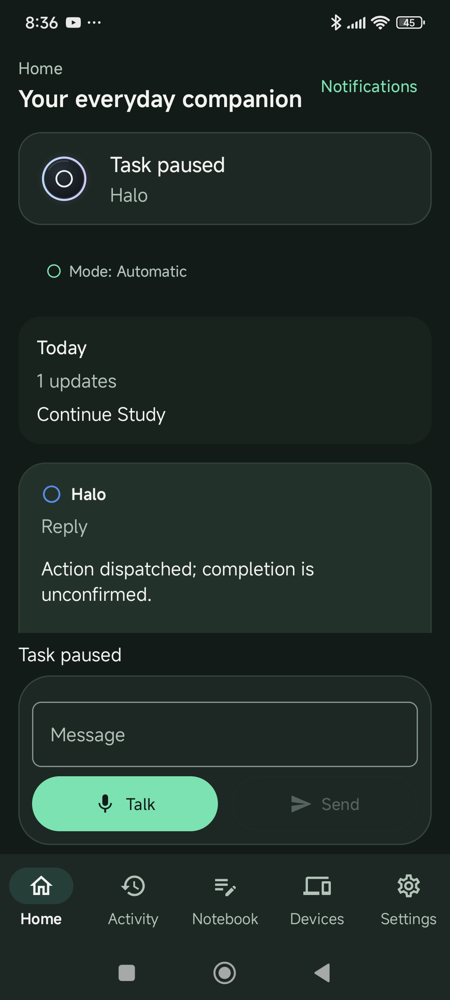
Request an answer or a supported phone action by voice or text. Halo should distinguish completed work from failed and unconfirmed steps.
Save notes and files, arrange ideas in Canvas, and study from sources you choose.
Run a compatible model on your phone, connect your own server or select a cloud provider. Privacy and performance differ by choice.
01 · INSIDE THE APP
Home handles requests. Activity shows actions and approvals. Notebook keeps notes and files; Canvas and Study work with those sources. Devices and Settings manage hardware, models and permissions. These are real Android screenshots, not proof that every feature is fully tested.
Choose a screen, swipe, or use the arrows to explore the current Android implementation.
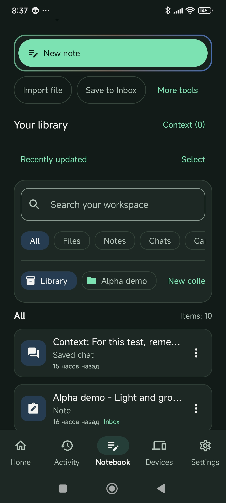
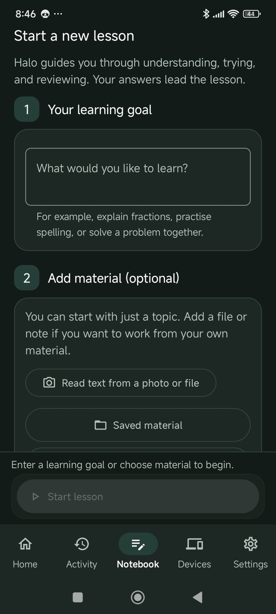
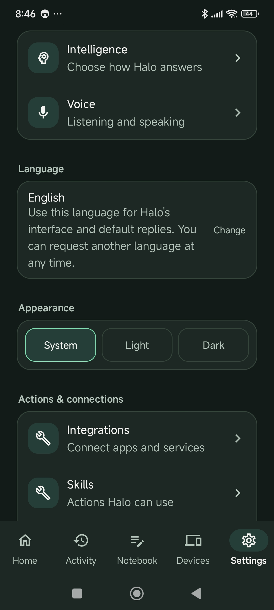
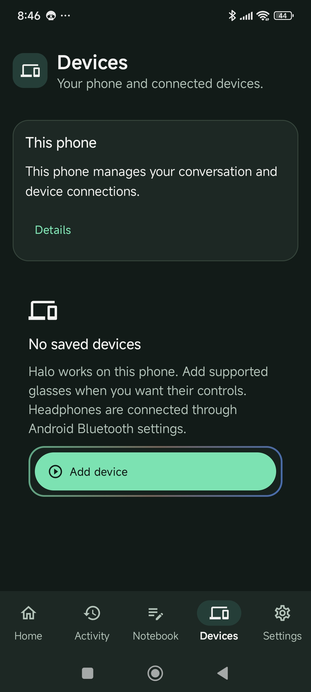
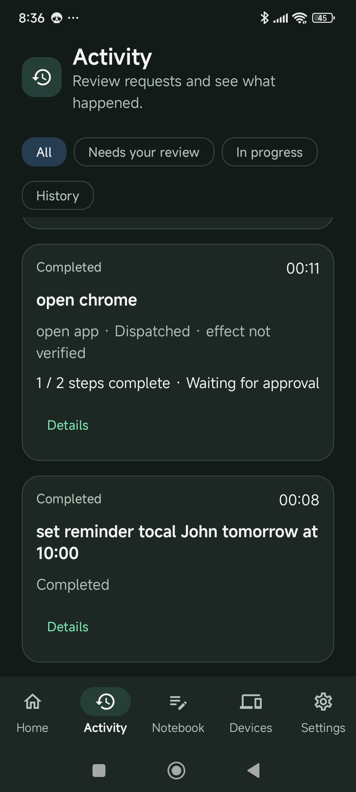
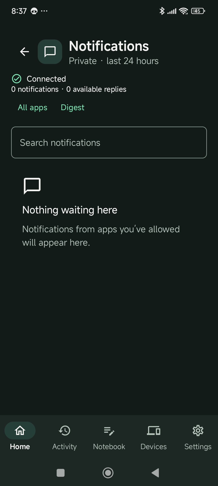
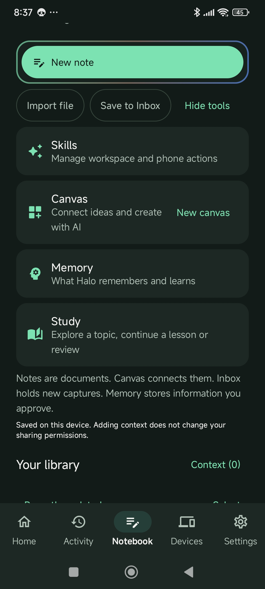
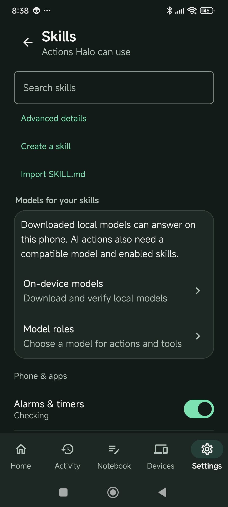
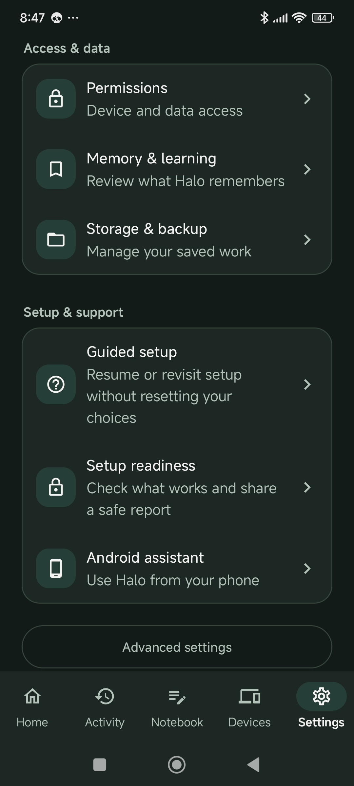
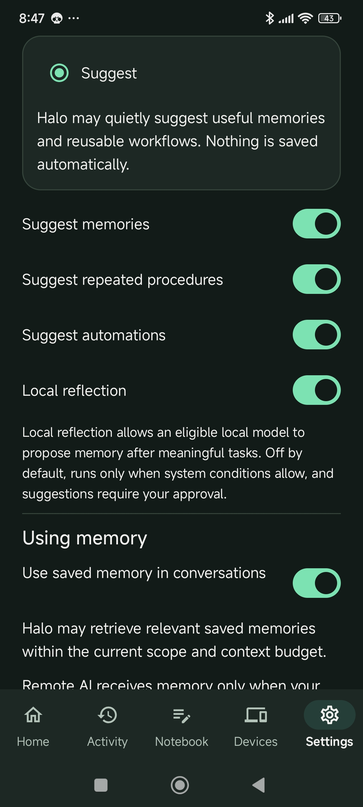
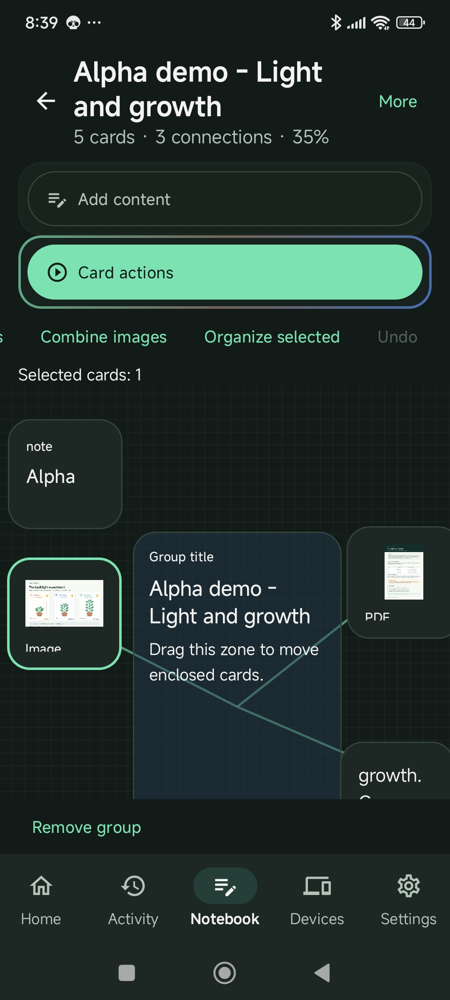
Real Android test-build screenshots from 13 October 2026. The app is shown in English; the language picker changes website text, not screenshot content.
02 · PHONE ACTIONS
Try setting a timer, opening an app or adjusting a setting. With permission and approval, Halo can also work with visible screen controls. Multi-step actions and handoffs to third-party apps are still being tested.
Set alarms and timers. Change volume, ringer mode, brightness and flashlight. Open settings and apps.
Examples: “Set a timer for 12 minutes.” · “Put the phone on vibrate.”Find contacts, open the dialer, launch navigation, open URLs, search the web, share text and control media.
When an action is handed to another app, Halo reports that the request was dispatched. Completion may still be unconfirmed.Inspect device, battery and network state; read clipboard text; fetch a web page; search files and Notebook.
Access to sensitive data follows tool policies and approval rules.Read the current Android screen, find UI elements, and use accessibility-backed click, scroll and text entry when needed.
Screen-changing accessibility actions are explicitly confirmation-gated.HONEST ACTION STATUS
Halo records attempted actions and their outcomes. If another app takes over or Android cannot confirm the result, the assistant should report that rather than claim the task is finished.
03 · NOTES AND STUDY
Notebook saves notes and files. Canvas lets you arrange, annotate and connect your sources. Study turns material you choose into explanations, questions and guided practice.
Notebook
Find your notes, imported files and saved conversations in one library. Choose the materials you want to work with next.
Canvas
Place notes, images and documents on a visual canvas. Connect related ideas and arrange them in a way that makes sense to you.
Study
Start with a question or learning goal. Add your own material when useful, then learn through explanations, practice and review.
04 · AI OPTIONS
Download and test a model on your phone, connect a server on your network, or configure a cloud provider. Remote requests can send relevant context to the provider you select. Halo must not silently move your data to a different provider after a failure.
Discover and download LiteRT models in Settings, test an answer, then choose a model for supported roles. A fit estimate is not a real device test: speed and compatibility depend on the phone.
Connect to Ollama, OpenCode Companion or a compatible endpoint on a computer you control.
Configure OpenRouter, Gemini, OpenAI or another supported provider. Each service has its own setup, costs and limits.
The current app supports Google authorization with a Cloud project, alongside an API-key fallback.
Free access, model availability and limits depend on the provider and may change.
A selected provider failure is not permission to silently move private context to another provider.
Credentials use Android Keystore-backed storage rather than ordinary app preferences.
05 · CONNECTED DEVICES
Halo is not a glasses-only assistant. Android is the first host platform. Glasses, headsets and experimental robots may extend interaction where drivers and hands-on tests support them; other host platforms remain in development.
The Android app contains the assistant, model setup, phone tools, Notebook and Study. Some workflows still need validation on physical devices.
HeyCyan glasses are the current Bluetooth and microphone integration target. Some speaker and media paths still need physical testing.
Supported Android headsets can provide microphone and audio output, depending on routing and permissions.
BuddyBot is a robot project exploring physical actions and safety. It is experimental and not needed to use Halo.
06 · DEVELOPMENT STATUS
The Android alpha has working paths and substantial code, but compile checks, unit tests and physical device acceptance are different things. Some actions and integrations remain unverified. Check GitHub Releases for builds and their known limits.
A small Qwen model has produced local responses on an Android test device. HeyCyan microphone capture also has real-hardware evidence.
The app has code-level tests for actions, workspace and model-related behavior. Passing tests does not establish that every command works on every phone.
Model compatibility, multi-step actions, remote-provider failures and some wearable audio paths still need end-to-end acceptance on real hardware.
SOURCE AND TEST EVIDENCE
The repository separates implemented code, test evidence and known gaps. You can inspect the progress rather than rely on website claims.
07 · FOR DEVELOPERS
Halo separates input, context, model reasoning, permissions and tool execution. Android is the first host; Linux and Windows are development targets, not released apps. The aim is to keep the assistant useful without committing to a single model or gadget.
Connected devices report what they can do. Halo does not assume every device has the same sensors or controls.
Use a local model or explicitly choose a network provider. Remote requests follow that provider's data handling terms.
Halo records tool calls and their results so interrupted work can be inspected and recovery does not blindly repeat completed actions.
08 · TRY THE ALPHA
Check GitHub Releases for an installable Android build. If one is available, use the short test guide and sample files, then report what worked, failed or was confusing. Glasses and personal documents are not required.
Check Android releases ↗. No published APK? The app is not yet available through this programme.
One short reading, one observation image, and a quick route through the wider app.
Use the checklist, skip hardware you don't own, and note what actually happens.
Report confusing moments as well as broken features. Both help shape Halo.
FREE SAMPLE FILES
The Study example follows three basil seedlings with different daily light exposure. The PDF describes the conditions, and the image shows the final measurements. Together they help check whether Halo uses the source or invents a plausible answer. Downloadable examples are in English.
Sample measurements are fictional and intended only for testing. Some Study image tasks require a configured vision-capable model.

TEST MATERIALS
Each file downloads directly from this website. Start with the guide, then import the other materials into Halo as needed.
QUICK TEST ROUTE
Tick each step you have tried, including failed attempts. Checkmarks stay in this browser; they are included when you choose to prepare feedback.
A missing feature, unsupported file, failed provider or missing permission is useful test evidence. Record the actual outcome.
Your feedback
A bug, a confusing moment or a small suggestion all help. Your tried checklist steps will be included in the email draft.
FOUND SOMETHING?
Tell us which screen you were on, what you tried, what you expected and what actually happened. Include your Android and Halo versions if relevant. Never post API keys, personal files, identifiers, or unredacted private logs.
Halo version / Android version: Screen or feature: What I tried: Expected: Actual: Steps to reproduce: Screenshot (redact private data):
Alpha means unfinished software. Features and supported devices can change. Back up important work and avoid relying on Halo for safety-critical tasks. A public build only exists when a release appears on GitHub Releases ↗.